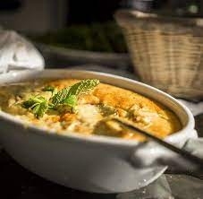

Hummus

Hummus is the ultimate Mediterranean dip.
Hummus is a dip of Arab origin made from cooked,
mashed chickpeas blended with tahini, lemon juice, and garlic.
Ingredients
- 1 15 oz can of chickpeas
- ½ cup raw tahini paste (not ready-to-eat tahini)
- 2 tbsp lemon juice
- 1 large garlic clove, mashed
- 1 tsp salt
- ¼-½ water from chickpea can
- Olive oil, paprika and ground cumin for garnish
Instructions
-
Drain the chickpeas, reserving 1/2 cup liquid from the can. Reserve 2
tablespoons of chickpeas for garnishing, too.
-
Blend the chickpeas in a food processor or blender until you have
obtained a rough paste.
-
Add tahini, garlic, lemon juice and salt. Blend until you have a smooth
purée. Add 1/4 cup reserved water, blending meanwhile.
Stop the machine to check the purée for desired texture. Some like their
hummus grainier, some like it very smooth and light.
If you want a very light, creamy hummus, add reserved water, 1
tablespoon at a time, until you're satisfied.
Don't add a lot of water at once; that may result in something more
watery than you really want.
-
Taste the hummus. Add more salt or lemon juice if desired – again, just
a little at a time.
Resist the temptation to add more garlic at this time, because the
garlic flavor becomes stronger over time.
Leave the hummus in its blender or food processor bowl; cover and let it
mellow in the refrigerator for 1/2 hour.
Taste again. I find that I don't need to add garlic, but if desired, add
a small, mashed garlic clove and blend again,
thoroughly. Serve in a medium bowl, or several smaller bowls placed
around the table.
Sprinkle each bowl with pinches of paprika and/or ground cumin.
Draw a circle of olive oil around the surface of the hummus.
Garnish with a few reserved chickpeas.